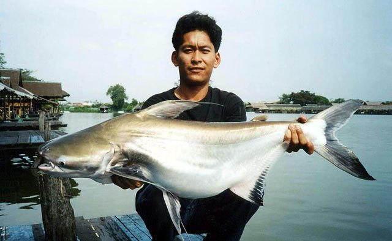

鲇形目 · 巨鲶科 · 国家Ⅱ级保护动物
长丝巨鲶
Pangasius sanitwongsei
巨鲶科大型鱼类，分布于云南，多见于近底层水层，以鱼类、底栖甲壳类等为食。
01形态特征
鳍上有暗黑色素细胞。背鳍、胸鳍和腹鳍的第一条软鳍条延长成丝状。宽阔的头；各种体型的个体，尤其是幼鱼，前几条臀鳍条的尖端呈黑色；腭牙和犁骨牙齿联合成一个长的新月形斑块。口宽，其宽度是体长的5.5-5.9倍。横截面：侧扁。
最大体长可达 300 cm（体长）；最大体重约 300.0 kg。
02地理分布
文献记录分布于云南。
涉及水系包括澜沧江（湄公河）。
03典型生境

平原河段河道宽阔、水流较缓，沿岸多有沙洲、湾沱与芦苇带。水位和浑浊度随季风降水明显变化，是许多大型鲤科、鲇类和洄游鱼类的主要通道。
栖息于淡水，近底层水层。
气候带属热带。
洄游类型为河川洄游。
04生活习性
兼性呼吸；成鱼栖息于大河流。幼鱼被发现于较大的支流中。年轻人和成鱼都以鱼类和甲壳类动物为食。据了解，较大的个体以家禽或狗的尸体为食（通常用作诱饵）。一种迁徙物种。它们在雨季来临前产卵，当年的幼鱼到六月中旬可达到约 10 厘米的长度。渔业曾经伴随着宗教性质的仪式和仪式。由于过度采伐、栖息地丧失和污染而受到威胁。
05食性与摄食
主要摄食鱼类、底栖甲壳类等。营养级约 4.0。
食性类型属动物食性。
06繁殖
繁殖生物学资料尚在整理中。
07保护与利用
依据 2021 年《国家重点保护野生动物名录》，长丝𱇮被列为国家Ⅱ级保护野生动物（名录名为长丝𱇮）。禁止非法猎捕、杀害、收购、运输、出售；涉及野外种群的，禁止擅自捕捉与饲养。IUCN 评估等级为极危，仅作参考，不替代国家名录。
本页不提供垂钓、饲养或野采建议。发现非法捕捞、交易或伤害保护动物的行为，请向当地渔业或林草主管部门举报。
08影像记录
资料来源与说明
物种档案整理自 FishBase（物种 ID 6193），分类接受名参考 GBIF Backbone Taxonomy；保护等级依据 2021 年《国家重点保护野生动物名录》。中文描述由英文原始资料机器翻译并校正术语，可能存在语义偏差。
典型生境图片为生境类型示意图，用于呈现该类水域的环境特征，并非本种在野外的实拍。垂钓、饲养与野采建议仅为科普参考，请以当地渔业与林草主管部门规定为准。